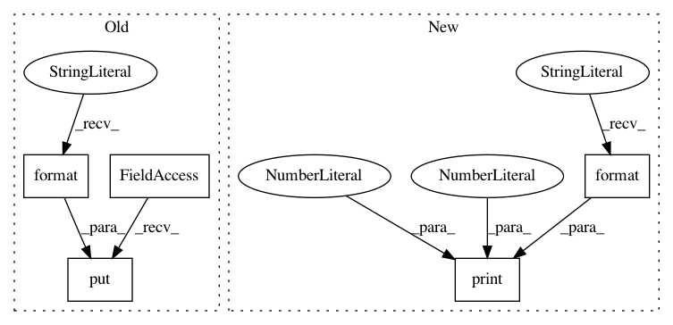

f1415931c6ec4bd4bbd19bffab9a5852277ec9e4,slips/core/database.py,Database,add_ips,#Database#Any#Any#Any#Any#Any#,309
Before Change
//////////////////////////
// 1- Count the dstips and store them
// TODO: Retire this info after we finish 2-. Because its duplicated
self.outputqueue.put("05|database|[DB]: Add_ips called with profileid {}, twid {}, daddr {}".format(profileid, twid, str(daddr)))
// Get the hash of the timewindow
hash_id = profileid + self.separator + twid
// Get the DstIPs data for this tw in this profile
// The format is data["1.1.1.1"] = 3
After Change
prev_data = self.getDataFromProfileTW(profileid, twid, type_host_key, summaryState, proto, role, "IPs")
try:
innerdata = prev_data[str(ip_as_obj)]
self.print("add_ips(): Adding for dst port {}. PRE Data: {}".format(dport, innerdata), 0, 3)
// We had this port
// We need to add all the data
innerdata["totalflows"] += 1
innerdata["totalpkt"] += int(pkts)
In pattern: SUPERPATTERN
Frequency: 3
Non-data size: 5
Instances
Project Name: stratosphereips/StratosphereLinuxIPS
Commit Name: f1415931c6ec4bd4bbd19bffab9a5852277ec9e4
Time: 2019-06-08
Author: eldraco@gmail.com
File Name: slips/core/database.py
Class Name: Database
Method Name: add_ips
Project Name: stratosphereips/StratosphereLinuxIPS
Commit Name: 91fcc70964ebe0c1c3a96977ad97abe5c4a6e7df
Time: 2019-06-08
Author: eldraco@gmail.com
File Name: slips/core/database.py
Class Name: Database
Method Name: add_tuple
Project Name: stratosphereips/StratosphereLinuxIPS
Commit Name: 725ba9a972e0d73e1b3d9476604270c8fc67b5c3
Time: 2019-04-03
Author: eldraco@gmail.com
File Name: evidenceProcess.py
Class Name: EvidenceProcess
Method Name: run